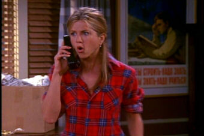
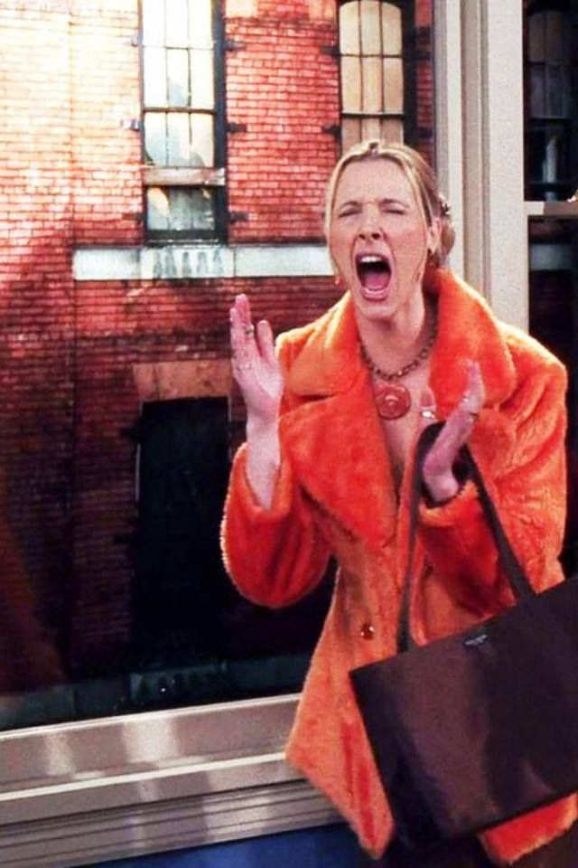
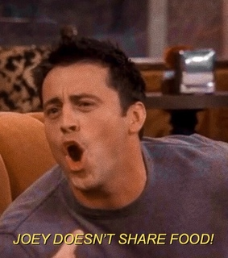
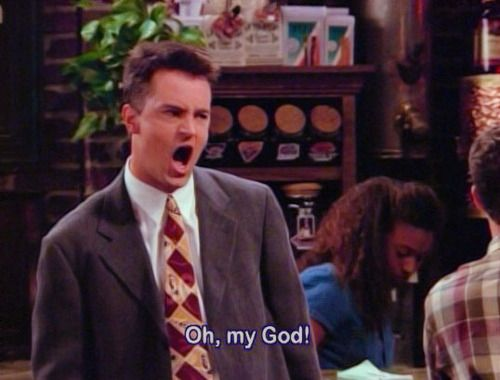

In this part of the website I'm gonna show some noticable and funny phrases. All of the characters have funny phrases, they are gonna be named per character.
Ross Geller

- PIVOT!!
- I wIlL hUnt yOu DoWn aND kIcK YoUr AsS
- You have no idea how much this hurts (while Rachel is giving birth)
- UNAGI, is a state of total awareness
- YOU THREW MY SANDWHICH AWAY! MY SANDWHICH!! MY SANDWHICH!!!
- We were on a break!!
Rachel Green
- Who is FICA and why are they getting all my money
- I'm gonna get one of those job things
- All of my friends are either getting pregnant, married or promoted and i'm getting coffee and it's not even for me
- Noooo
- How do you expect me to grow if you won't let me blow (after reading an impowering book for women)
- Oh that's okay, girls tend not to like me
Phoebe Buffay
- Ohh no
- You'll see, you'll all see. I don't need your help, I'll make it on my own (after practising acting with Joey.)
- OHWW MYY EYESS!! MYY EYESS!!!!
- Get of the plane, something wrong with the left philange (to Rachel to stall the plane so that Ross can tell her that he loves her)
- PICK UP THE SOCK! FOR THE LOVE OF GOD PICK UP THE SOCK JUDY (at Phoebe's birthday party to Ross's mom)
- They don't know that we know they know we know
- I wish I could but I don't want to (after Ross asking her for help)
- I don't even have a 'pla' (after realizing she doesn't have a plan for life)
Joey Tribbiani
- How you doin'
- I'm curvy and I like it (to Rachel's sister after saying he eats to much)
- JOEY DOESN'T SHARE FOOD!!!
- It's a moo point.
- But is hurts my Joey's apple (refuring to a man's adam's apple)
- A spoon, your hands, your face (at a game show question asked: 'what do you put in your coffee')
- My fridge broke so I had to eat everyting
- There is a line you can't cross, well that line is a dot to you. (towards Chandler after he made out with Joey's girlfriend)
Chandler Bing
- I just realized I can sleep with my eyes open (after listening to one of Ross's boring stories about dinosaurs.)
- Someone on the subway licked my neck. LICKED MY NECK!! (Phoebe responding with: owhn he is still alive.)
- Sometimes I like to hold small stuff and pretend I'm a giant.
- I'm glad we have a rehearsel dinner, I rarely practice dinners before I eat.
- Seriously, good luck marrying me (towards Monica after giving a sarcastic comment)
- It's sunday Monica, I don't move on sunday
- I say more dumb things before 9 a.m. than most people in an entire day
- Hi I'm Chandler and I make jokes when I'm uncomfortable
- Until I was 25 I thought the only reply to 'I love you' was 'oh crap'
- You know I think I don't care
- OH MY GOD!!!